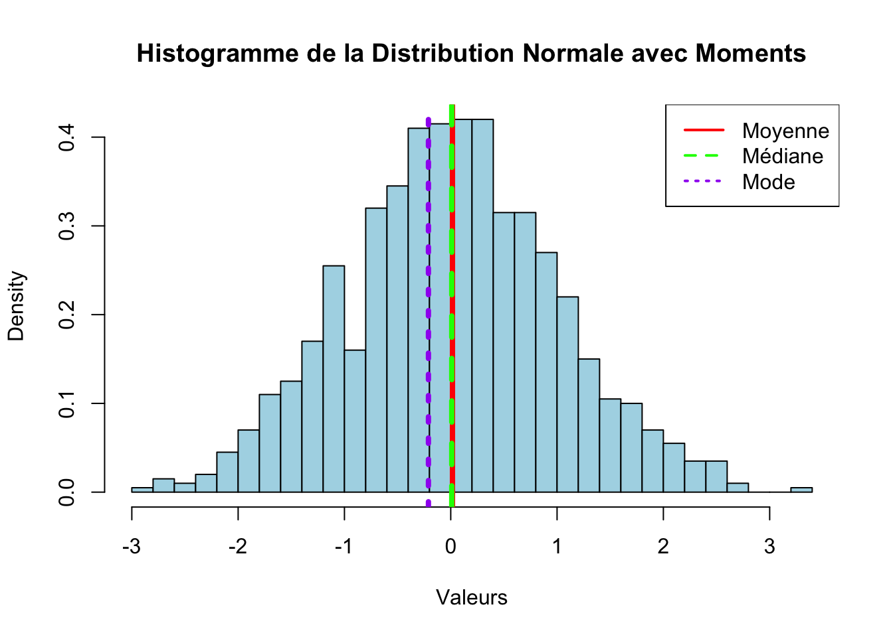
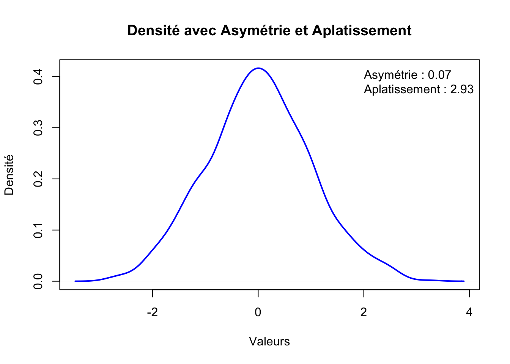
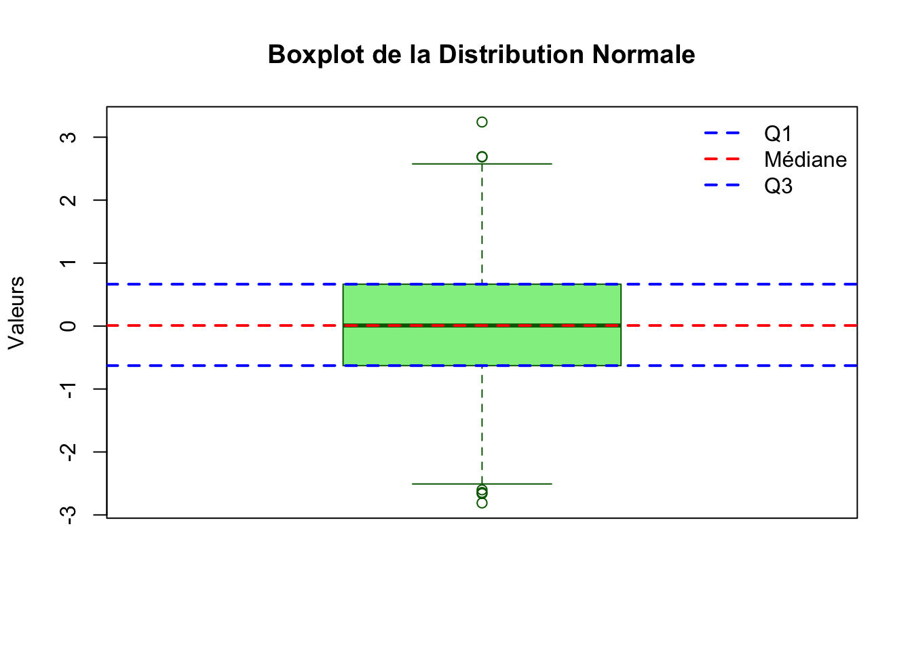
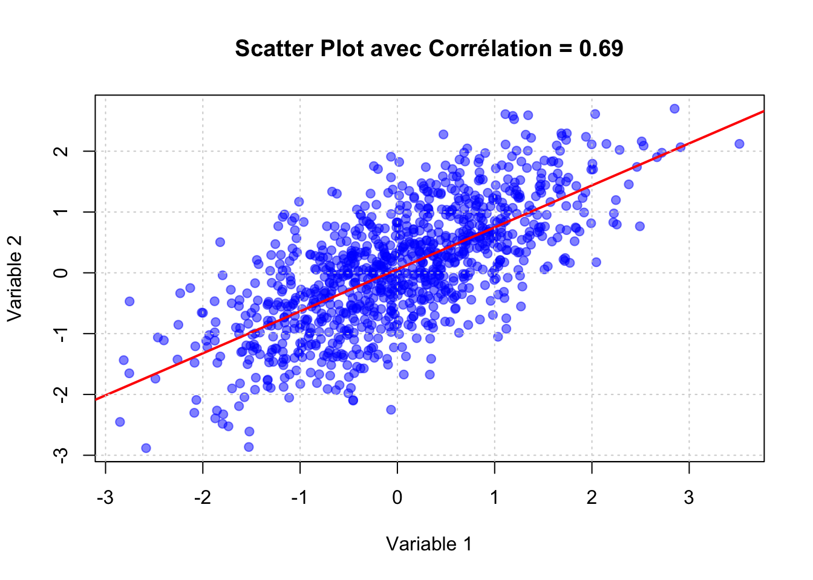
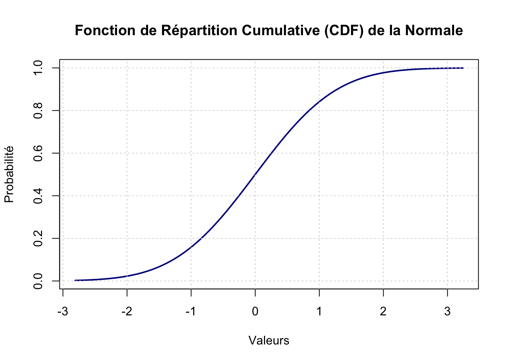
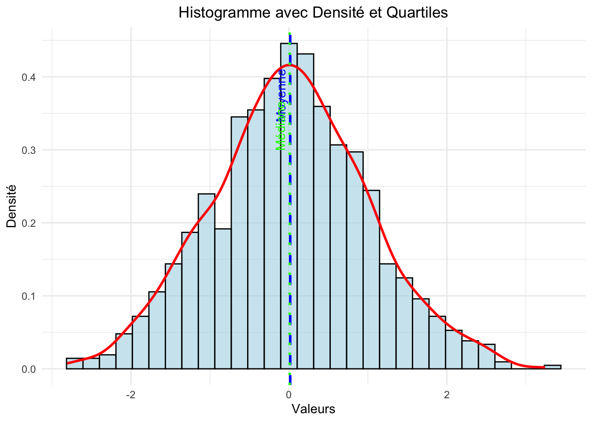
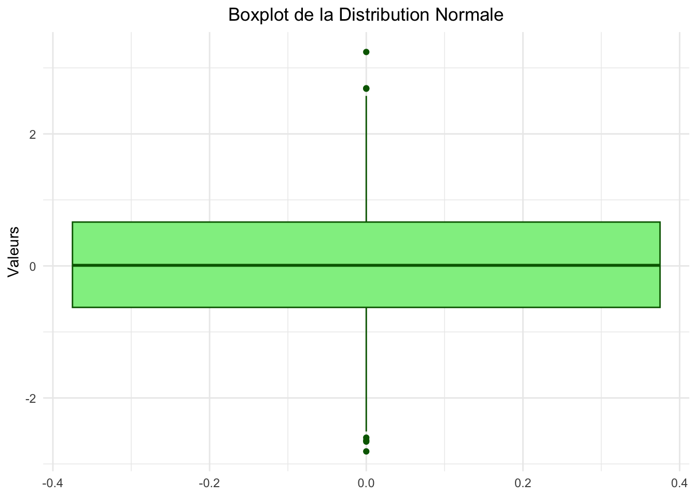
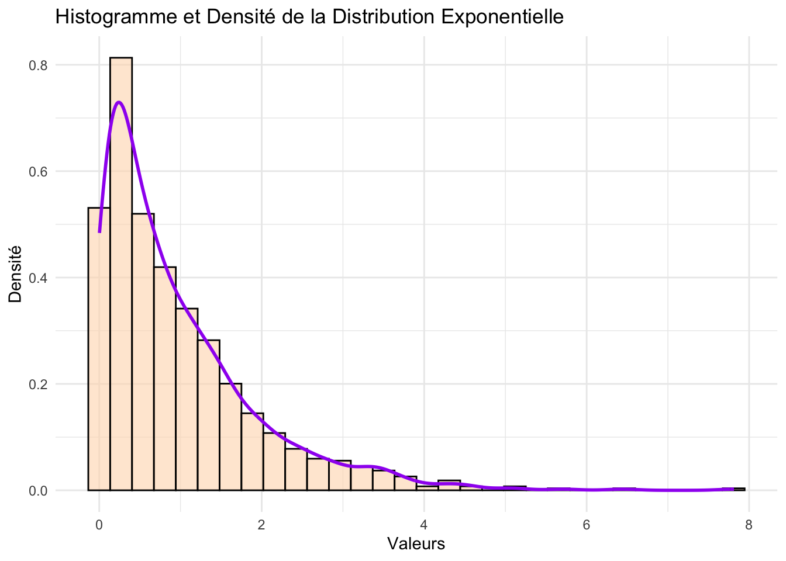

3Les Caractéristiques des Distributions de Probabilités
Dans cette section, nous examinerons les caractéristiques fondamentales des distributions de probabilités utilisées en économétrie financière. Comprendre ces caractéristiques est essentiel pour choisir les modèles appropriés, interpréter les résultats et effectuer des analyses statistiques robustes. Nous utiliserons le langage R pour calculer et visualiser ces caractéristiques à travers différents exemples de distributions.
3.1 Moments de Base
Les moments de base décrivent les propriétés centrales d’une distribution de probabilité. Les principaux moments que nous aborderons sont :
Moyenne ( \(\mu\) ) : La valeur attendue ou moyenne de la distribution.
Médiane : La valeur qui sépare la distribution en deux parties égales.
Mode : La valeur la plus fréquente dans la distribution.
Variance ( \(\sigma^2\) ) : La mesure de la dispersion des valeurs autour de la moyenne.
Écart-type ( \(\sigma\)) : La racine carrée de la variance, indiquant la dispersion des données.
3.1.1 Calcul des Moments de Base
# Exemple avec une distribution normalemu <-0# Moyennesigma <-1# Écart-typen <-1000# Nombre d'observations# Génération des donnéesset.seed(123)data_normale <-rnorm(n, mean = mu, sd = sigma)# Calcul des moments de basemoyenne <-mean(data_normale)mediane <-median(data_normale)mode_val <-as.numeric(names(sort(table(round(data_normale, 2)), decreasing =TRUE)[1]))variance <-var(data_normale)ecart_type <-sd(data_normale)# Affichage des résultatscat("Moyenne :", moyenne, "\n")
Moyenne : 0.01612787
cat("Médiane :", mediane, "\n")
Médiane : 0.009209639
cat("Mode :", mode_val, "\n")
Mode : -0.21
cat("Variance :", variance, "\n")
Variance : 0.9834589
cat("Écart-type :", ecart_type, "\n")
Écart-type : 0.991695
Explications : - mean() : Calcule la moyenne des données. - median() : Calcule la médiane des données. - mode_val : Estime le mode en arrondissant les données et en identifiant la valeur la plus fréquente. - var() : Calcule la variance des données. - sd() : Calcule l’écart-type des données.
3.1.2 Visualisation des Moments de Base
# Tracé de l'histogramme avec lignes représentant les momentshist(data_normale, breaks =30, probability =TRUE,main ="Histogramme de la Distribution Normale avec Moments",xlab ="Valeurs", col ="lightblue", border ="black")abline(v = moyenne, col ="red", lwd =4, lty =1) # Moyenneabline(v = mediane, col ="green", lwd =4, lty =2) # Médianeabline(v = mode_val, col ="purple", lwd =4, lty =3) # Modelegend("topright", legend =c("Moyenne", "Médiane", "Mode"),col =c("red", "green", "purple"), lwd =2, lty =1:3)

Interprétation : L’histogramme montre la distribution des données avec des lignes indiquant la moyenne, la médiane et le mode, permettant de visualiser la centralité et la symétrie de la distribution.
3.2 Asymétrie et Aplatissement
Deux caractéristiques avancées des distributions sont l’asymétrie (skewness) et l’aplatissement (kurtosis). Ces mesures fournissent des informations supplémentaires sur la forme de la distribution.
Asymétrie (Skewness) : Mesure de la symétrie de la distribution.
Skewness positive : Queue à droite plus longue.
Skewness négative : Queue à gauche plus longue.
Aplatissement (Kurtosis) : Mesure de la “taille” des queues de la distribution.
Kurtosis élevée : Plus de valeurs extrêmes.
Kurtosis faible : Moins de valeurs extrêmes.
3.2.1 Calcul de l’Asymétrie et de l’Aplatissement
Pour calculer l’asymétrie et l’aplatissement, nous utiliserons le package moments.
# Installation et chargement du package 'moments' si nécessaireif(!require(moments)) {install.packages("moments")library(moments)}# Calcul de l'asymétrie et de l'aplatissementasymetrie <-skewness(data_normale)aplatissement <-kurtosis(data_normale)# Affichage des résultatscat("Asymétrie :", asymetrie, "\n")
Asymétrie : 0.06529391
cat("Aplatissement :", aplatissement, "\n")
Aplatissement : 2.925747
Explications : - skewness() : Calcule l’asymétrie de la distribution. - kurtosis() : Calcule l’aplatissement de la distribution. - Une asymétrie proche de 0 indique une distribution symétrique. - Une kurtosis proche de 3 indique une distribution similaire à la normale (mesure de référence).
3.2.2 Visualisation de l’Asymétrie et de l’Aplatissement
# Tracé de la densité avec annotations pour l'asymétrie et l'aplatissementplot(density(data_normale), main ="Densité avec Asymétrie et Aplatissement",xlab ="Valeurs", ylab ="Densité", lwd =2, col ="blue")legend("topright", legend =c(paste("Asymétrie :", round(asymetrie, 2)),paste("Aplatissement :", round(aplatissement, 2))),bty ="n")

Interprétation : Le graphique de densité montre la forme générale de la distribution avec des annotations indiquant l’asymétrie et l’aplatissement, facilitant ainsi l’interprétation des caractéristiques de la distribution.
3.3 Mesures de Position et de Dispersion
Outre les moments de base, il existe d’autres mesures importantes pour décrire la position et la dispersion des données.
Quartiles : Divisent les données en quatre parties égales.
Premier quartile (Q1) : 25% des données sont en dessous.
Deuxième quartile (Q2) : Médiane.
Troisième quartile (Q3) : 75% des données sont en dessous.
Écart Interquartile (IQR) : Différence entre Q3 et Q1.
Range : Différence entre la valeur maximale et minimale.
3.3.1 Calcul des Quartiles, IQR et Range
# Calcul des quartilesquartiles <-quantile(data_normale, probs =c(0.25, 0.5, 0.75))Q1 <- quartiles[1]Q2 <- quartiles[2] # MédianeQ3 <- quartiles[3]# Calcul de l'écart interquartile (IQR)iqr_val <-IQR(data_normale)# Calcul du rangerange_val <-range(data_normale)range_diff <-diff(range_val)# Affichage des résultatscat("Premier quartile (Q1) :", Q1, "\n")
Premier quartile (Q1) : -0.6596063
Médiane (Q2) : 0.01164503
Troisième quartile (Q3) : 0.6916845
Écart Interquartile (IQR) : 1.3512908
Range : [ -3.025713, 3.020785 ]
Différence du Range : 6.046498
Explications : - quantile() : Calcule les quartiles spécifiés. - IQR() : Calcule l’écart interquartile. - range() et diff() : Calculent l’intervalle et la différence entre les valeurs maximales et minimales.
3.3.2 Visualisation des Quartiles et du Range avec Boxplot
# Tracé du boxplotboxplot(data_normale, main ="Boxplot de la Distribution Normale",ylab ="Valeurs", col ="lightgreen", border ="darkgreen")# Ajout des annotationsabline(h = Q1, col ="blue", lwd =2, lty =2) # Q1abline(h = Q2, col ="red", lwd =2, lty =2) # Médianeabline(h = Q3, col ="blue", lwd =2, lty =2) # Q3legend("topright", legend =c("Q1", "Médiane", "Q3"),col =c("blue", "red", "blue"), lwd =2, lty =2, bty ="n")

Interprétation : Le boxplot visualise les quartiles, l’écart interquartile et les valeurs extrêmes de la distribution, offrant une représentation graphique claire des mesures de position et de dispersion.
3.4 Coefficient de Corrélation
En économétrie financière, il est souvent important de mesurer la relation entre deux variables aléatoires. Le coefficient de corrélation est une mesure statistique qui indique la force et la direction de cette relation.
3.4.1 Calcul du Coefficient de Corrélation
# Génération de deux distributions normales corréléeslibrary(MASS)mu <-c(0, 0)Sigma <-matrix(c(1, 0.7, 0.7, 1), nrow =2) # Matrice de covariance avec corrélation 0.7set.seed(456)data_corr <-mvrnorm(n =1000, mu = mu, Sigma = Sigma)# Calcul du coefficient de corrélationcorrelation <-cor(data_corr[,1], data_corr[,2])# Affichage du résultatcat("Coefficient de corrélation :", correlation, "\n")
Coefficient de corrélation : 0.688052
Interprétation :
Coefficient de corrélation : 0.705956
Explications : - mvrnorm() : Génère des données suivant une distribution normale multivariée avec une corrélation spécifiée. - cor() : Calcule le coefficient de corrélation entre les deux variables.
3.4.2 Visualisation de la Corrélation avec un Scatter Plot
# Tracé du scatter plotplot(data_corr[,1], data_corr[,2],main =paste("Scatter Plot avec Corrélation =", round(correlation, 2)),xlab ="Variable 1", ylab ="Variable 2",pch =19, col =rgb(0, 0, 1, 0.5))abline(lm(data_corr[,2] ~ data_corr[,1]), col ="red", lwd =2)grid()

Interprétation : Le scatter plot montre la relation linéaire entre les deux variables, avec une ligne de régression rouge illustrant la corrélation positive forte.
3.5 Mesures de Forme Avancées
Outre l’asymétrie et l’aplatissement, il existe d’autres mesures de forme qui peuvent être pertinentes en fonction des besoins de l’analyse.
Moment central : Mesure des caractéristiques de la distribution centrée autour de la moyenne.
Fonction de répartition cumulative (CDF) : La probabilité qu’une variable aléatoire soit inférieure ou égale à une certaine valeur.
Fonction de répartition inverse (Quantile) : La valeur telle que la proportion spécifiée des données est inférieure ou égale à cette valeur.
3.5.1 Calcul de la Fonction de Répartition Cumulative (CDF)
# Calcul de la CDF pour une séquence de valeursx_seq <-seq(min(data_normale), max(data_normale), length.out =1000)cdf_normale <-pnorm(x_seq, mean = mu, sd = sigma)# Tracé de la CDFplot(x_seq, cdf_normale, type ="l", lwd =2, col ="darkblue",main ="Fonction de Répartition Cumulative (CDF) de la Normale",xlab ="Valeurs", ylab ="Probabilité")grid()

Interprétation : La CDF montre l’accumulation de la probabilité jusqu’à chaque valeur de ( x ), illustrant la distribution cumulative des données.
Explications : Les quantiles fournissent des points de référence pour la distribution des données, utiles pour identifier des seuils spécifiques.
3.6 Visualisation des Caractéristiques avec ggplot2
Le package ggplot2 offre des outils puissants pour visualiser les caractéristiques des distributions de manière élégante et informative.
3.6.1 Histogramme avec Densité et Quartiles
# Installation et chargement de ggplot2 si nécessaireif(!require(ggplot2)) {install.packages("ggplot2")library(ggplot2)}# Création d'un data framedf <-data.frame(Valeurs = data_normale)# Tracé avec ggplot2ggplot(df, aes(x = Valeurs)) +geom_histogram(aes(y = ..density..), bins =30, fill ="lightblue", color ="black", alpha =0.6) +geom_density(color ="red", size =1) +geom_vline(aes(xintercept = moyenne), color ="blue", linetype ="dashed", size =1) +geom_vline(aes(xintercept = mediane), color ="green", linetype ="dotted", size =1) +labs(title ="Histogramme avec Densité et Quartiles",x ="Valeurs", y ="Densité") +theme_minimal() +theme(plot.title =element_text(hjust =0.5)) +annotate("text", x = moyenne, y =max(density(data_normale)$y)*0.9, label ="Moyenne", color ="blue", angle =90, vjust =-0.5) +annotate("text", x = mediane, y =max(density(data_normale)$y)*0.8, label ="Médiane", color ="green", angle =90, vjust =-0.5)

Interprétation : Le graphique combine un histogramme, une courbe de densité et des lignes verticales indiquant la moyenne et la médiane, offrant une vue d’ensemble complète des caractéristiques de la distribution.
3.6.2 Boxplot avec ggplot2
# Tracé du boxplot avec ggplot2ggplot(df, aes(y = Valeurs)) +geom_boxplot(fill ="lightgreen", color ="darkgreen") +labs(title ="Boxplot de la Distribution Normale",y ="Valeurs") +theme_minimal() +theme(plot.title =element_text(hjust =0.5))

Interprétation : Le boxplot affiche les quartiles, l’écart interquartile, et les valeurs extrêmes, fournissant une représentation visuelle de la dispersion et de la symétrie des données.
3.7 Mesures de Forme pour Distributions Non-Normales
Certaines distributions présentent des caractéristiques spécifiques qui nécessitent des mesures adaptées.
3.7.1 Distribution Exponentielle
# Paramètres de la distribution exponentiellerate <-1# Tauxdata_exp <-rexp(n, rate = rate)# Calcul des momentsmoyenne_exp <-mean(data_exp)variance_exp <-var(data_exp)skewness_exp <-skewness(data_exp)kurtosis_exp <-kurtosis(data_exp)# Affichage des résultatscat("Moyenne Exponentielle :", moyenne_exp, "\n")
Explications : - La distribution exponentielle a une asymétrie positive élevée et un aplatissement supérieur à 3, indiquant des queues plus épaisses comparées à une distribution normale.
3.7.2 Visualisation de la Distribution Exponentielle
# Tracé de la densité exponentielle avec ggplot2df_exp <-data.frame(Valeurs = data_exp)ggplot(df_exp, aes(x = Valeurs)) +geom_histogram(aes(y = ..density..), bins =30, fill ="peachpuff", color ="black", alpha =0.6) +geom_density(color ="purple", size =1) +labs(title ="Histogramme et Densité de la Distribution Exponentielle",x ="Valeurs", y ="Densité") +theme_minimal()

Interprétation : Le graphique montre un histogramme avec la courbe de densité exponentielle superposée, illustrant la forte asymétrie et les queues épaisses de la distribution.
3.7.3 Conclusion
Cette section a couvert les principales caractéristiques des distributions de probabilités, incluant les moments de base, l’asymétrie, l’aplatissement, et d’autres mesures de forme. En maîtrisant ces concepts et en utilisant les outils fournis par R, vous serez mieux équipé pour analyser et interpréter les distributions des variables financières. Ces compétences sont cruciales pour le développement et l’évaluation de modèles économétriques robustes et pertinents dans le domaine de la finance.
N’hésitez pas à expérimenter avec différentes distributions et paramètres pour approfondir votre compréhension et affiner vos compétences analytiques.